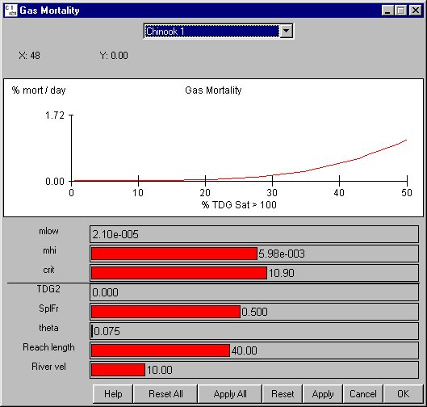

Gas Mortality Equation
Selecting Behavior Gas Mortality Equation opens companion windows, the Gas Mortality window and the Population Density vs. Depth window. These two windows are interrelated, and together define the mortality due to gas relationship. The average gas mortality for a reach is calculated by averaging over all gas levels in a reach and also using a fish depth distribution. There is roughly a three percent per foot compensation for every foot below the surface. The average is computed by multiplying the gas mortality equation by the fish depth distribution and integrating over the length and depth of the reach. The percent mortality per day for the reach is a flow-weighted average of the mortality in each flow.
Gas Mortality Equation opens companion windows, the Gas Mortality window and the Population Density vs. Depth window. These two windows are interrelated, and together define the mortality due to gas relationship. The average gas mortality for a reach is calculated by averaging over all gas levels in a reach and also using a fish depth distribution. There is roughly a three percent per foot compensation for every foot below the surface. The average is computed by multiplying the gas mortality equation by the fish depth distribution and integrating over the length and depth of the reach. The percent mortality per day for the reach is a flow-weighted average of the mortality in each flow.
Gas Mortality
The Gas Mortality window displays the average mortality due to gas for each species in a reach specified by a set of adjustable parameters. Gas Mortality is displayed in %mortality/day versus the percent of dissolved gas saturation above 100 in the right-bank flow. The Gas Mortality Equation uses the following parameters:
- mlow: Mortality rate for gas levels below the gas level specified by crit.
- mhi: Mortality rate for gas levels above the gas level specified by crit.
- crit: Critical dissolved gas saturation level (in percent above 100) which determines the switch from a low to high mortality rate. The critical gas saturation level at the surface of the water is assumed to be the same throughout the water column in this particular model.
The remaining parameters in this window are for display purposes only in order to describe and display attributes of a reach that affect its average gas mortality rate:
- TDG2: Gas level in the left-bank flow in percent above 100.
- SplFr: Percentage of flow in the right bank flow.
- theta: Value for the Reach Gas Theta parameter, which determines the amount of mixing between flows in the reach.
- Reach length: Length of the reach in miles.
- River vel: River velocity in the reach in miles/day.
This is an Equation Input window.

Gas Mortality Window